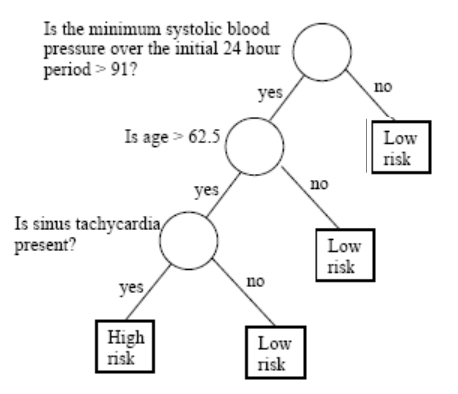
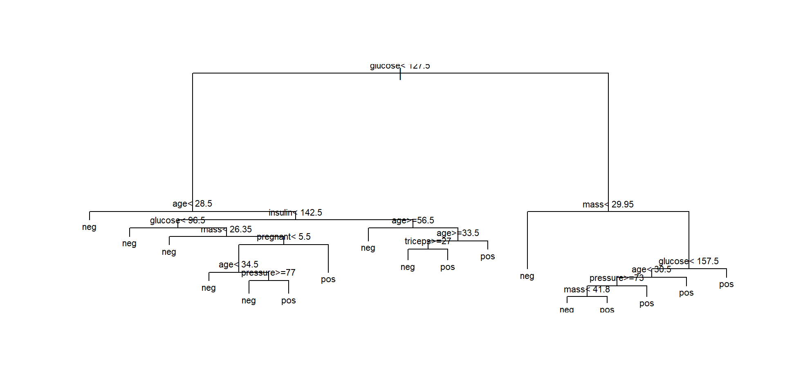
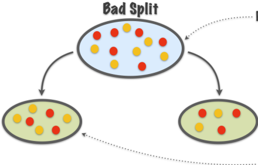
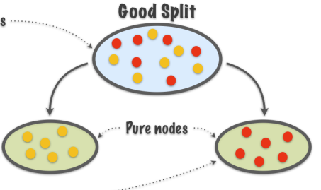
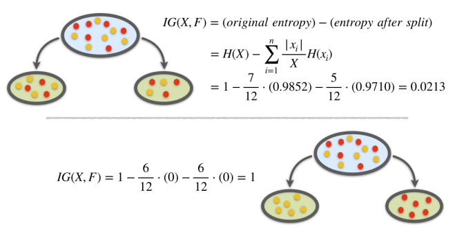
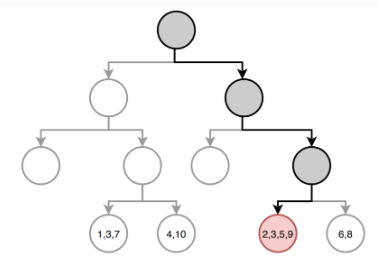

Tree based methods
Alex Sanchez, Ferran Reverter and Esteban Vegas
Genetics Microbiology and Statistics Department. University of Barcelona
Introduction to Decision Trees
Motivation
- In many real-world applications, decisions need to be made based on complex, multi-dimensional data.
- One goal of statistical analysis is to provide insights and guidance to support these decisions.
- Decision trees provide a way to organize and summarize information in a way that is easy to understand and use in decision-making.
Examples
A bank needs to have a way to decide if/when a customer can be granted a loan.
A doctor may need to decide if a patient has to undergo a surgery or a less aggressive treatment.
A company may need to decide about investing in new technologies or stay with the traditional ones.
In all those cases a decision tree may provide a structured approach to decision-making that is based on data and can be easily explained and justified.
An intuitive approach
Decisions are often based on asking several questions on available information whose answers induce binary splits on data that end up with some grouping or classification.
So, what is a decision tree?
A decision tree is a graphical representation of a series of decisions and their potential outcomes.
It is obtained by recursively stratifying or segmenting the feature space into a number of simple regions.
Each region (decision) corresponds to a node in the tree, and each potential outcome to a branch.
The tree structure can be used to guide decision-making based on data.
What do we need to learn?
We need context:
When is it appropriate to rely on decision trees?
When would other approaches be preferable?
What type of decision trees can be used?
We need to know how to build good trees
- How do we construct a tree?
- How do we optimize the tree?
- How do we evaluate it?
More about context
Decision trees are non parametric, data guided predictors, well suited in many situations such as:
- Non-linear relationships.
- High-dimensional data.
- Interaction between variables exist.
- Mixed data types.
They are not so appropriate for complex datasets, or complex problems, that require expert knowledge.
Types of decision trees
Classification Trees are built when the response variable is categorical.
- They aim to classify a new observation based on the values of the predictor variables.
Regression Trees are used when the response variable is numerical.
- They aim to predict the value of a continuous response variable based on the values of the predictor variables.
Tree building with R
Tree building with Python
| Package | Algorithm | Dataset size | Missing data handling | Ensemble methods | Visual repr | User interface |
|---|---|---|---|---|---|---|
scikit-learn |
CART (DecisionTreeClassifier) | Small to large | Can handle NaN | Yes | Yes (using Graphviz) | Simple |
dtreeviz |
CART (DecisionTree) | Small to large | Can handle NaN | No | Yes | Simple |
xgboost |
Gradient Boosting | Medium to large | Requires imputation | Yes | No | Complex |
lightgbm |
Gradient Boosting | Medium to large | Requires imputation | Yes | No | Complex |
Starting with an example
- The Pima Indian Diabetes dataset contains 768 individuals (female) and 9 clinical variables.
Rows: 768
Columns: 9
$ pregnant <dbl> 6, 1, 8, 1, 0, 5, 3, 10, 2, 8, 4, 10, 10, 1, 5, 7, 0, 7, 1, 1…
$ glucose <dbl> 148, 85, 183, 89, 137, 116, 78, 115, 197, 125, 110, 168, 139,…
$ pressure <dbl> 72, 66, 64, 66, 40, 74, 50, NA, 70, 96, 92, 74, 80, 60, 72, N…
$ triceps <dbl> 35, 29, NA, 23, 35, NA, 32, NA, 45, NA, NA, NA, NA, 23, 19, N…
$ insulin <dbl> NA, NA, NA, 94, 168, NA, 88, NA, 543, NA, NA, NA, NA, 846, 17…
$ mass <dbl> 33.6, 26.6, 23.3, 28.1, 43.1, 25.6, 31.0, 35.3, 30.5, NA, 37.…
$ pedigree <dbl> 0.627, 0.351, 0.672, 0.167, 2.288, 0.201, 0.248, 0.134, 0.158…
$ age <dbl> 50, 31, 32, 21, 33, 30, 26, 29, 53, 54, 30, 34, 57, 59, 51, 3…
$ diabetes <fct> pos, neg, pos, neg, pos, neg, pos, neg, pos, pos, neg, pos, n…Looking at the data
- These Variables are known to be related with cardiovascular diseases.
- It seems intuitive to use these variables to decide if a person is affected by diabetes
p0 p25 p50 p75 p100 hist
diabetes NA NA NA NA NA <NA>
pregnant 0.000 1.00000 3.0000 6.00000 17.00 ▇▃▂▁▁
glucose 44.000 99.00000 117.0000 141.00000 199.00 ▁▇▇▃▂
pressure 24.000 64.00000 72.0000 80.00000 122.00 ▁▃▇▂▁
triceps 7.000 22.00000 29.0000 36.00000 99.00 ▆▇▁▁▁
insulin 14.000 76.25000 125.0000 190.00000 846.00 ▇▂▁▁▁
mass 18.200 27.50000 32.3000 36.60000 67.10 ▅▇▃▁▁
pedigree 0.078 0.24375 0.3725 0.62625 2.42 ▇▃▁▁▁
age 21.000 24.00000 29.0000 41.00000 81.00 ▇▃▁▁▁Predicting Diabetes onset
We wish to predict the probability of individuals in being diabete-positive or negative.
- We start building a tree with all the variables
- A simple visualization illustrates how it proceeds
Viewing the tree as text
n= 768
node), split, n, loss, yval, (yprob)
* denotes terminal node
1) root 768 268 neg (0.65104167 0.34895833)
2) glucose< 127.5 485 94 neg (0.80618557 0.19381443)
4) age< 28.5 271 23 neg (0.91512915 0.08487085) *
5) age>=28.5 214 71 neg (0.66822430 0.33177570)
10) insulin< 142.5 164 48 neg (0.70731707 0.29268293)
20) glucose< 96.5 51 4 neg (0.92156863 0.07843137) *
21) glucose>=96.5 113 44 neg (0.61061947 0.38938053)
42) mass< 26.35 19 0 neg (1.00000000 0.00000000) *
43) mass>=26.35 94 44 neg (0.53191489 0.46808511)
86) pregnant< 5.5 49 15 neg (0.69387755 0.30612245)
172) age< 34.5 25 2 neg (0.92000000 0.08000000) *
173) age>=34.5 24 11 pos (0.45833333 0.54166667)
346) pressure>=77 10 2 neg (0.80000000 0.20000000) *
347) pressure< 77 14 3 pos (0.21428571 0.78571429) *
87) pregnant>=5.5 45 16 pos (0.35555556 0.64444444) *
11) insulin>=142.5 50 23 neg (0.54000000 0.46000000)
22) age>=56.5 12 1 neg (0.91666667 0.08333333) *
23) age< 56.5 38 16 pos (0.42105263 0.57894737)
46) age>=33.5 29 14 neg (0.51724138 0.48275862)
92) triceps>=27 22 8 neg (0.63636364 0.36363636) *
93) triceps< 27 7 1 pos (0.14285714 0.85714286) *
47) age< 33.5 9 1 pos (0.11111111 0.88888889) *
3) glucose>=127.5 283 109 pos (0.38515901 0.61484099)
6) mass< 29.95 75 24 neg (0.68000000 0.32000000) *
7) mass>=29.95 208 58 pos (0.27884615 0.72115385)
14) glucose< 157.5 116 46 pos (0.39655172 0.60344828)
28) age< 30.5 50 23 neg (0.54000000 0.46000000)
56) pressure>=73 29 10 neg (0.65517241 0.34482759)
112) mass< 41.8 20 4 neg (0.80000000 0.20000000) *
113) mass>=41.8 9 3 pos (0.33333333 0.66666667) *
57) pressure< 73 21 8 pos (0.38095238 0.61904762) *
29) age>=30.5 66 19 pos (0.28787879 0.71212121) *
15) glucose>=157.5 92 12 pos (0.13043478 0.86956522) *- This representation shows the variables and split values that have been selected by the algorithm.
- It can be used to classify (new) individuals following the decisions (splits) from top to bottom.
Plotting the tree (1)

Plotting the tree (Nicer)
The tree plotted with the rpart.plot package.
Each node shows: (1) the predicted class (‘neg’ or ‘pos’), (2) the predicted probability, (3) the percentage of observations in the node.
Individual prediction
Consider individuals 521 and 562
pregnant glucose pressure triceps insulin mass pedigree age diabetes
521 2 68 70 32 66 25.0 0.187 25 neg
562 0 198 66 32 274 41.3 0.502 28 pos521 562
neg pos
Levels: neg posIf we follow individuals 521 and 562 along the tree, we reach the same prediction.
The tree provides not only a classification but also an explanation.
How accurate is the model?
- It is straightforward to obtain a simple performance measure.
predicted.classes<- predict(model1, PimaIndiansDiabetes2, "class")
mean(predicted.classes == PimaIndiansDiabetes2$diabetes)[1] 0.8294271The question becomes harder when we go back and ask if we obtained the best possible tree.
In order to answer this question we must study tree construction in more detail.
Building Classification Trees
Building the trees
As with any model, we aim not only at construting trees.
We wish to build good trees and, if possible, optimal trees in some sense we decide.
In order to build good trees we must decide
How to construct a tree?
How to optimize the tree?
How to evaluate it?
TREES ARE SUPERVISED LEARNERS
Classification / Regression: Supervised Learning tasks:
There is a learning set \(\mathcal{L}=\{(\mathbf{X_i,Y_i})\}_{i=1}^n\)
And depending of \(\mathbf{Y}\) we have:
- Classification: \(\mathbf{X}\in\mathbb{R}^d,\quad Y\in\{-1,+1\}\)
- Regression \(\mathbf{X}\in\mathbb{R}^d,\quad Y\in\mathbb{R}\).
TREES AND DECISION TREES
- A tree is a set of nodes and edges organized in a hierarchical fashion.
In contrast to a graph, in a tree there are no loops.
- A decision tree is a tree where each split node stores a boolean test function to be applied to the incoming data.
Each leaf stores the final answer (predictor)


Additional notation
A node is denoted by \(t\).
- The left and right child nodes are denoted by \(t_{L}\) and \(t_{R}\) respectively.
The collection of all nodes in the tree is denoted \(T\)
The collection of all the leaf nodes is denoted \(\tilde{T}\)
A split will be denoted by \(s\).
- The set of all splits is denoted by \(S\).
Building a tree
A binary decision tree is built by defining a series of (recursive) splits on the feature space.
The splits are decided in such a way that the associated learning task is attained
- by setting thresholds on the variables values,
- that induce paths in the tree,
The ultimate goal of the tree is to be able to use a combination of the splits to accomplish the learning task with as small an error as possible.
Trees partition the space
A tree represents a recursive splitting of the space.
- Every node of interest corresponds to one region in the original space.
- Two child nodes occupy two different regions.
- Together, yield same region as that of the parent node.
In the end, every leaf node is assigned with a class and a test point is assigned with the class of the leaf node it lands in.
The tree represents the splitting


Different splits are possible
- It is always possible to split a space in distinct ways
Some ways perform better than other for a given task, but rarely will they be perfect.
So we aim at combining splits to find a better rule.
Construction of a tree
Tree building involves the following three elements:
The selection of the splits, i.e., how do we decide which node (region) to split and how to split it?
- How to select from the pool of candidate splits?
- What are appropriate goodness of split criteria?
If we know how to make splits (‘grow’ the tree), how do we decide when to declare a node terminal and stop splitting?
How do we assign each terminal node to a class?
TB 1.1 - Split selection
To build a Tree, questions have to be generated that induce splits based on the value of a single variable.
Ordered variable \(X_j\):
- Is \(X_j \leq c\)? for all possible thresholds \(c\).
- Split lines: parallel to the coordinates.
Categorical variables, \(X_j \in \{1, 2, \ldots, M\}\):
- Is \(X_j \in A\)?, where \(A \subseteq M\) .
The pool of candidate splits for all \(p\) variables is formed by combining all the generated questions.
TB 1.21 - Goodness of Split
The way we choose the split, is to measure every split by a ‘goodness of split’ measure, which depends on:
- the split question as well as
- the node to split.
Goodness of split is measured by impurity functions.
Intuitively, when we split the points we want the region corresponding to each leaf node to be “pure”, that is, most points in this region come from the same class, that is, one class dominates.
TB 1.2.2 - Good splits vs bad splits

Purity not increased

Purity increased
TB 1.2.3 - Measuring homogeneity
In order to measure homogeneity,or as called here, purity, of splits we introduce
- Impurity functions
- Impurity measures
Used to measure the extent of purity for a region containing data points from possibly different classes.
TB 1.2.4 - Impurity functions
An impurity function is a function \(\Phi\) defined on the set of all \(K\)-tuples of numbers \(\mathbf{p}= \left(p_{1}, \cdots, p_{K}\right)\) s.t. \(p_{j} \geq 0, \, \sum_{j=1}^K p_{j}=1\), \[ \Phi: \left(p_{1}, \cdots, p_{K}\right) \rightarrow [0,1] \]
with the properties:
- \(\Phi\) achieves maximum only for the uniform distribution, that is all the \(p_{j}\) are equal.
- \(\Phi\) achieves minimum only at the points \((1,0, \ldots, 0)\),\((0,1,0, \ldots, 0)\), \(\ldots,(0,0, \ldots, 0,1)\), i.e., when the probability of being in a certain class is 1 and 0 for all the other classes.
- \(\Phi\) is a symmetric function of \(p_{1}, \cdots, p_{K}\), i.e., if we permute \(p_{j}\), \(\Phi\) remains constant.
TB 1.2.5 - Some Impurity Functions
- The functions below are commonly used to measure impurity.
\(\Phi_E (\mathbf{p}) = -\sum_{j=1}^K p_j\log (p_j)\) (Entropy).
\(\Phi_G (\mathbf{p}) = 1-\sum_{j=1}^K p_j^2\). (Gini Index).
\(\Phi_M (\mathbf{p}) = \sum_{i=1}^K p_j(1-p_j)\) (Misclassification rate).
- In practice, for classification trees only the first two are recommended.
TB 1.2.5 Impurity functions behavior
Node impurity functions for the two-class case. - The entropy function (rescaled) is the red curve, the Gini index is the green curve, and the resubstitution estimate of the misclassification rate is the blue curve.
TB 1.2.6 - Impurity for a split
- Given an impurity function \(\Phi\), a node \(t\), and given \(p(j \mid t)\), the estimated posterior probability of class \(j\) given node \(t\), the impurity measure of \(t\), \(i(t)\), is defined as:
\[ i(t)=\phi(p(1 \mid t), p(2 \mid t), \ldots, p(K \mid t)) \] - That is, the impurity measure of a split (or a node) is the impurity function when computed on probabilities associated (conditional) with a node.
TB 1.2.7 - Goodness of a split
- Once we have defined \(i(t)\), we define the goodness of split \(s\) for node \(t\), denoted by \(\Phi(s, t)\) :
\[ \Phi(s, t)=\Delta i(s, t)=i(t)-p_{R} i\left(t_{R}\right)-p_{L} i\left(t_{L}\right) \]
- The best split for the single variable \(X_{j}\) is the one that has the largest value of \(\Phi(s, t)\) over all \(s \in \mathcal{S}_{j}\), the set of possible distinct splits for \(X_{j}\).
TB 1.2.8 - Impurity score for a node
The impurity, \(i(t)\), of a node is based solely on the estimated posterior probabilities of the classes
- That is, it doesn’t account for the size of \(t\).
This is done by the impurity score of \(t\), defined as \(I(t)=i(t)\cdot p(t)\), a weighted impurity measure of node \(t\) that takes into account:
The estimated posterior probabilities of the classes,
The estimated proportion of data that go to node \(t\).
TB 1.2.9 - Applications of \(I(t)\)
- \(I(t)\) can be used to:
- Define the aggregated impurity of a tree, by adding the impurity scores of all terminal leaves.
- Provide a weighted measure of impurity decrease for a split: \(\Delta I(s, t)=p(t) \Delta i(s, t)\).
- Define a criteria for stop splitting a tree (see below).
TB 1.2.10 - Entropy as an impurity measure
- The entropy of a node, \(t\), that is split in \(n\) child nodes \(t_1\), \(t_2\), …, \(t_n\), is:
\[ H(t)=-\sum_{i=1}^{n} P\left(t_{i}\right) \log _{2} P\left(t_{i}\right) \]
TB 1.2.11 - Goodness of split based on entropy
From here, an information gain (that is impurity decrease) measure can be introduced.
Information theoretic approach that compares
- the entropy of the parent node before the split to
- that of a weighted sum of the child nodes after the split where the weights are proportional to the number of observations in each node.
TB 1.2.12 - Information gain
- For a split \(s\) and a set of observations (a node) \(t\), information gain is defined as:
\[ \begin{aligned} & IG(t, s)=\text { (original entr.) }-(\text { entr. after split) } \\ & IG(t, s)=H(t)-\sum_{i=1}^{n} \frac{\left|t_{i}\right|}{t} H\left(x_{i}\right) \end{aligned} \]
Example
Consider the problem of designing an algorithm to automatically differentiate between apples and pears (class labels) given only their width and height measurements (features).
| Width | Height | Fruit |
|---|---|---|
| 7.1 | 7.3 | Apple |
| 7.9 | 7.5 | Apple |
| 7.4 | 7.0 | Apple |
| 8.2 | 7.3 | Apple |
| 7.6 | 6.9 | Apple |
| 7.8 | 8.0 | Apple |
| 7.0 | 7.5 | Pear |
| 7.1 | 7.9 | Pear |
| 6.8 | 8.0 | Pear |
| 6.6 | 7.7 | Pear |
| 7.3 | 8.2 | Pear |
| 7.2 | 7.9 | Pear |
Example. Entropy Calculation
Example. Information Gain
Prediction with Trees
TB 2 - Class Assignment
The decision tree classifies new data points as follows.
We let a data point pass down the tree and see which leaf node it lands in.
The class of the leaf node is assigned to the new data point. Basically, all the points that land in the same leaf node will be given the same class.
This is similar to k-means or any prototype method.
TB 2.1 - Class Assignment Rules
- A class assignment rule assigns a class \(j=1, \cdots, K\) to every terminal (leaf) node \(t \in \tilde{T}\).
- The class is assigned to node \(t\) is denoted by \(\kappa(t)\),
- E.g., if \(\kappa(t)=2\), all the points in node \(t\) would be assigned to class 2.
- If we use 0-1 loss, the class assignment rule picks the class with maximum posterior probability:
\[ \kappa(t)=\arg \max _{j} p(j \mid t) \]
TB 2.2. Estimating the error rate (1)
Let’s assume we have built a tree and have the classes assigned for the leaf nodes.
Goal: estimate the classification error rate for this tree.
We use the resubstitution estimate \(r(t)\) for the probability of misclassification, given that a case falls into node \(t\). This is:
\[ r(t)=1-\max _{j} p(j \mid t)=1-p(\kappa(t) \mid t) \]
TB 2.3. Estimating the error rate (2)
Denote \(R(t)=r(t) p(t)\), that is the miscclassification error rate weighted by the probability of the node.
The resubstitution estimation for the overall misclassification rate \(R(T)\) of the tree classifier \(T\) is:
\[ R(T)=\sum_{t \in \tilde{T}} R(t) \]
Obtaining best trees
TB. 3.1 - When to stop growing
Maximizing information gain is one possible criteria to choose among splits.
In order to avoid excessive complexity it is usually decided to stop splitting when information gain does not compensate for increase in complexity.
TB 3.2 Stop splitting criteria
- In practice, stop splitting is decided when: \[
\max _{s \in S} \Delta I(s, t)<\beta,
\]where:
- \(\Delta I\) represents the information gain associated with an optimal split \(s\) and a node \(t\),
- and \(\beta\) is a pre-determined threshold.
TB 3.3 Optimizing the Tree
Trees obtained by looking for optimal splits tend to overfit: good for the data in the tree, but generalize badly and tend to fail more in predictions.
In order to reduce complexity and overfitting,
while keeping the tree as good as possible, tree pruning may be applied.Pruning works removing branches that are unlikely to improve the accuracy of the model on new data.
TB 3.4 Pruning methods
- There are different pruning methods, but the most common one is the cost-complexity pruning algorithm, also known as the weakest link pruning.
- The algorithm works by adding a penalty term to the misclassification rate of the terminal nodes:
\[ R_\alpha(T) =R(T)+\alpha|T| \] where \(\alpha\) is the parameter that controls the trade-off between tree complexity and accuracy.
TB 3.5 Cost complexity pruning
Start by building a large tree that overfits the data.
Then, use cross-validation to estimate the optimal value of alpha that minimizes the generalization error.
Finally, prune the tree by removing the branches that have a smaller improvement in impurity than the penalty term multiplied by alpha.
Iterate the process until no more branches can be pruned, or until a minimum tree size is reached.
Regression Trees
Regression modelling with trees
When the response variable is numeric, decision trees are regression trees.
Option of choice for distinct reasons
- The relation between response and potential explanatory variables is not linear.
- Perform automatic variable selection.
- Easy to interpret, visualize, explain.
- Robust to outliers and can handle missing data
Classification vs Regression Trees
| Aspect | Regression Trees | Classification Trees |
|---|---|---|
| Outcome var. type | Continuous | Categorical |
| Goal | To predict a numerical value | To predict a class label |
| Splitting criteria | Mean Squared Error, Mean Abs. Error | Gini Impurity, Entropy, etc. |
| Leaf node prediction | Mean or median of the target variable in that region | Mode or majority class of the target variable ... |
| Examples of use cases | Predicting housing prices, predicting stock prices | Predicting customer churn, predicting high/low risk in diease |
| Evaluation metric | Mean Squared Error, Mean Absolute Error, R-square | Accuracy, Precision, Recall, F1-score, etc. |
Regression tree example
- The
airqualitydataset from thedatasetspackage contains daily air quality measurements in New York from May through September of 1973 (153 days). - The main variables include:
- Ozone: the mean ozone (in parts per billion) …
- Solar.R: the solar radiation (in Langleys) …
- Wind: the average wind speed (in mph) …
- Temp: the maximum daily temperature (ºF) …
- Main goal : Predict ozone concentration.
Non linear relationships!
Building the tree (1): Splitting
- Consider:
- all predictors \(X_1, \dots, X_n\), and
- all values of cutpoint \(s\) for each predictor and
- For each predictor find boxes \(R_1, \ldots, R_J\) that minimize the RSS, given by:
\[ \sum_{j=1}^J \sum_{i \in R_j}\left(y_i-\hat{y}_{R_j}\right)^2 \]
where \(\hat{y}_{R_j}\) is the mean response for the training observations within the \(j\) th box.
Building the tree (2): Splitting
- To do this, define the pair of half-planes
\[ R_1(j, s)=\left\{X \mid X_j<s\right\} \text { and } R_2(j, s)=\left\{X \mid X_j \geq s\right\} \]
and seek the value of \(j\) and \(s\) that minimize the equation:
\[ \sum_{i: x_i \in R_1(j, s)}\left(y_i-\hat{y}_{R_1}\right)^2+\sum_{i: x_i \in R_2(j, s)}\left(y_i-\hat{y}_{R_2}\right)^2. \]
Building the tree (3): Prediction
Once the regions have been created we predict the response using the mean of the trainig observations in the region to which that observation belongs.
In the example, for an observation belonging to the shaded region, the prediction would be:
\[ \hat{y} =\frac{1}{4}(y_2+y_3+y_5+y_9) \]

Example: A regression tree
set.seed(123)
train <- sample(1:nrow(aq), size = nrow(aq)*0.7)
aq_train <- aq[train,]
aq_test <- aq[-train,]
aq_regresion <- tree::tree(formula = Ozone ~ .,
data = aq_train, split = "deviance")
summary(aq_regresion)
Regression tree:
tree::tree(formula = Ozone ~ ., data = aq_train, split = "deviance")
Variables actually used in tree construction:
[1] "Temp" "Wind" "Solar.R" "Day"
Number of terminal nodes: 8
Residual mean deviance: 285.6 = 21420 / 75
Distribution of residuals:
Min. 1st Qu. Median Mean 3rd Qu. Max.
-58.2000 -7.9710 -0.4545 0.0000 5.5290 81.8000 Example: Plot the tree
Error estimation and optimization for regression trees
Prunning the tree (1)
- As before, cost-complexity prunning can be applied
- We consider a sequence of trees indexed by a nonnegative tuning parameter \(\alpha\).
- For each value of \(\alpha\) there corresponds a subtree \(T \subset T_0\) such that:
\[ \sum_{m=1}^{|T|} \sum_{y_i \in R_m} \left(y_i -\hat{y}_{R_m}\right)^2+ \alpha|T|\quad (*) \label{prunning} \]
is as small as possible.
Tuning parameter \(\alpha\)
- \(\alpha\) controls a trade-off between the subtree’s complexity and its fit to the training data.
- When \(\alpha=0\), then the subtree \(T\) will simply equal \(T_0\).
- As \(\alpha\) increases, there is a price to pay for having a tree with many terminal nodes, and so (*) will tend to be minimized for a smaller subtree.
- Equation (*1) is reminiscent of the lasso.
- \(\alpha\) can be chosen by cross-validation .
Optimizing the tree (\(\alpha\))
Use recursive binary splitting to grow a large tree on the training data, stopping only when each terminal node has fewer than some minimum number of observations.
Apply cost complexity pruning to the large tree in order to obtain a sequence of best subtrees, as a function of \(\alpha\).
Use K-fold cross-validation to choose \(\alpha\). That is, divide the training observations into \(K\) folds. For each \(k=1, \ldots, K\) :
- Repeat Steps 1 and 2 on all but the \(k\) th fold of the training data.
- Evaluate the mean squared prediction error on the data in the left-out \(k\) th fold, as a function of \(\alpha\).
Average the results for each value of \(\alpha\). Pick \(\alpha\) to minimize the average error.
- Return the subtree from Step 2 that corresponds to the chosen value of \(\alpha\).
Example: Prune the tree
cv_aq <- tree::cv.tree(aq_regresion, K = 5)
optimal_size <- rev(cv_aq$size)[which.min(rev(cv_aq$dev))]
aq_final_tree <- tree::prune.tree(
tree = aq_regresion,
best = optimal_size
)
summary(aq_final_tree)
Regression tree:
tree::tree(formula = Ozone ~ ., data = aq_train, split = "deviance")
Variables actually used in tree construction:
[1] "Temp" "Wind" "Solar.R" "Day"
Number of terminal nodes: 8
Residual mean deviance: 285.6 = 21420 / 75
Distribution of residuals:
Min. 1st Qu. Median Mean 3rd Qu. Max.
-58.2000 -7.9710 -0.4545 0.0000 5.5290 81.8000 In this example pruning does not improve the tree.
Advantages and disadvantages of trees
Trees have many advantages
Trees are very easy to explain to people.
Decision trees may be seen as good mirrors of human decision-making.
Trees can be displayed graphically, and are easily interpreted even by a non-expert.
Trees can easily handle qualitative predictors without the need to create dummy variables.
But they come at a price
Trees generally do not have the same level of predictive accuracy as sorne of the other regression and classification approaches.
Additionally, trees can be very non-robust: a small change in the data can cause a large change in the final estimated tree.
References and Resources
References
Efron, B., Hastie T. (2016) Computer Age Statistical Inference. Cambridge University Press. Web site
Hastie, T., Tibshirani, R., & Friedman, J. (2009). The elements of statistical learning: Data mining, inference, and prediction. Springer.
James, G., Witten, D., Hastie, T., & Tibshirani, R. (2013). An introduction to statistical learning (Vol. 112). Springer. Web site
Complementary references
Breiman, L., Friedman, J., Stone, C. J., & Olshen, R. A. (1984). Classification and regression trees. CRC press.
Brandon M. Greenwell (202) Tree-Based Methods for Statistical Learning in R. 1st Edition. Chapman and Hall/CRC DOI: https://doi.org/10.1201/9781003089032
Genuer R., Poggi, J.M. (2020) Random Forests with R. Springer ed. (UseR!)
Resources
Applied Data Mining and Statistical Learning (Penn Statte-University)
An Introduction to Recursive Partitioning Using the RPART Routines